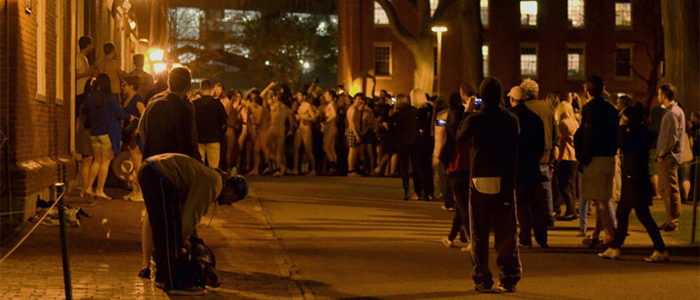
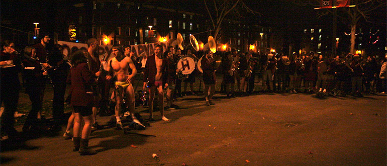

20 January 2015 | Published in Education News | Written by Tracy R. Baro
HARVARD PRIMAL SCREAM: INSTRUCTION TO FRESHMEN
If you are a student, you must have a recipe to de-stress. What do you do when studies reach a peak, and your brain seems to explode any minute because of information surfeit and multiple "to-do" tasks?
Do you go shopping? Give a reckless party? Buy essays online? Stuff yourself with some finger-licking food? Well, any of these methods to relieve stress can be hardly compared with the "treatment" that has been invented by Harvard students.
Have you ever heard of Harvard Primal Scream? No? Then, there it goes. Every semester at midnight ... I know it sounds like a horror story or a black magic ritual though everything is rather numpty. So, before the finals begin as the clock is striking twelve, dozens of students in their "birthday suits" shouting their heads off, slip along a dark university yard. Doing so, they calm tension accumulated.
Where does stripping come in this tradition nobody knows for sure. It's been said that it all started in 1960s with students opening their windows to scream from the top of their lungs. But as far back as 1990s Harvard students would run naked except perhaps with their shoes on, since the action came even in winter.
Now this is a booming tradition, rolling year in and year out by the same rules, though Harvard Primal Scream 2014 that took place on December 11th, had a distinction. Instead of regularly route that goes through the Old Yard, students ran in a clockwise direction. Still, such alternations don't change the core of the matter. Take off your clothes and enjoy your journey.
If you are about to become a Harvard student, you will not escape this crazy tradition but you can bone up on it and run eye-catchingly even with nothing on you. This is what experienced "naked runners" suggest.
Dress code
If you are a girl, you can have a wrapper over your shoulders or a coat before it all starts. Men aren't that lucky and will have to freeze for some time since only underwear is allowed for them. It is desirable everyone has shoes on. This is not a run on the beach but a dash on damp ground with obstacles.
Take the right stance
Since Harvard Primal Scream is pretty popular arrangement, not only among students, there are likely to be onlookers who would like to take photos and put them online. Don't want your naked body to be in your friends' news feed, and then hide among a nude crowd where you have bigger odds not to come in the sight of cameras.
Come at the last moment
Standing in cool or even wintry night, stark naked with dozens of the same people, some of them being strangers to you, it isn't you do every day, is it? To avoid this awkward moment you can come with friends or join the show at the last second.
Enjoy the run!
Once you start running, free your mind from thoughts like "how do I look", "what will mom and dad say", "what if that nice guy/girl will see me". Take no thoughts of tomorrow, just savor the moment and feel stress leaving you.
Finally, don't regret having done it. You'll recollect it with a smile on your face.
(from: https://academic-writing.org/blog/harvard-primal-scream-instruction-to-freshmen/)